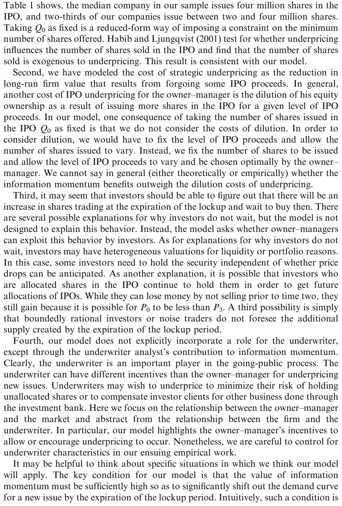
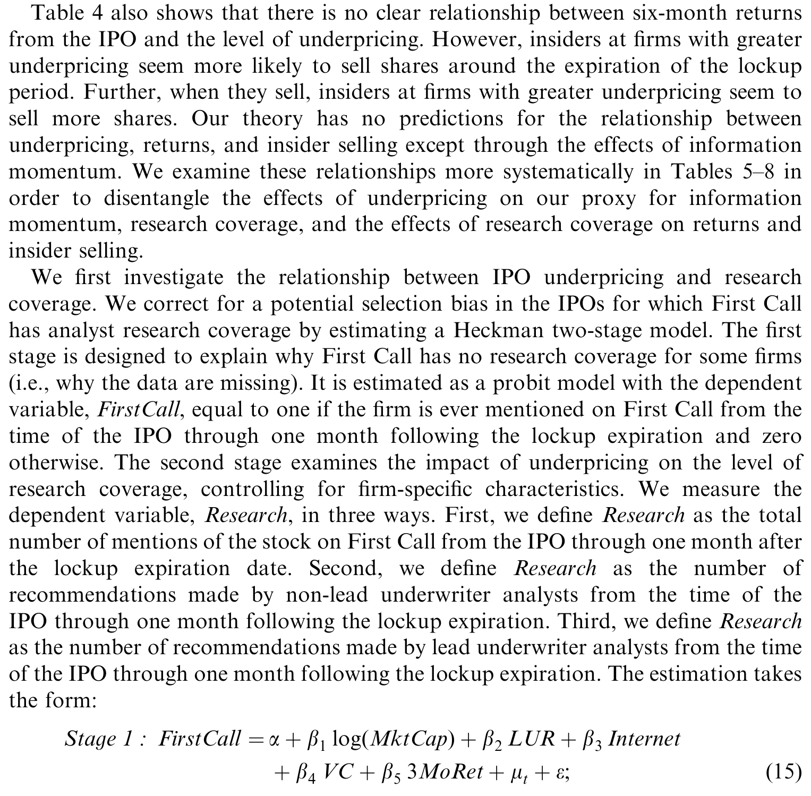
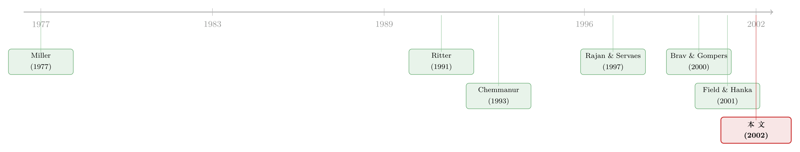

新股「打折」那点钱，原来是老板留给六个月后的自己
本文读的是 Aggarwal, Krigman & Womack (2002, Journal of Financial Economics)：管理层之所以心甘情愿地把 IPO「打折」卖——哪怕是首日暴涨 50% 的极端折价——并不是糊涂，而是一笔精算过的买卖。首日的暴涨制造出「信息动量」，把分析师和媒体的目光引到这只股票上，从而把它的需求曲线整体外推；等六个月后锁定期一到，老板就能用被抬高了的价格，从容地抛掉自己手里的那部分股份。新股发行时「留在桌上的钱」，其实是老板留给六个月后的自己的一张提款单。
1 一个让人想不通的开场
先从一个反常识的事实说起。
新股上市第一天就大涨，这件事本身一点都不新鲜——发达国家里，IPO 首日抑价 (underpricing) 的历史常态大约是 15%。可到了上世纪九十年代末，一个新现象冒了出来：极端抑价。互联网公司动辄首日暴涨超过 50%，意思是公司本可以多卖一倍的钱，却白白让给了那些打新的人。
按常理，发行人——也就是那些把自家公司带上市的 owner–manager——应该痛心疾首才对。毕竟那是实打实「留在桌上的钱」（money left on the table）。可奇怪的是，他们似乎毫不在意。Krigman et al.(2001) 做过一份 CFO 调查，结果是：那些折价最狠的公司的 CFO，几乎个个都对自己的主承销商「非常满意」。
钱被白白送掉了一大笔，被「宰」的人却笑得很开心。这就是本文要解开的谜。
首先要问的，是一个被以往文献忽略的角度：老板真正在乎的价格，到底是哪一个？
答案藏在一条几乎人人都签、却很少有人认真对待的条款里——锁定期 (lockup)。这是承销商与发行公司之间的协议，禁止内部人在 IPO 后的一段时间内卖出股份，平均长度是 6 个月。它的存在意味着：老板在 IPO 当天，通常一股自己的股票都卖不了。本文样本里，只有 26.4% 的公司在 IPO 时卖出过任何二级股份（secondary shares），而且其中管理层亲自下场卖的更是凤毛麟角。
于是，一个自然的推论浮现出来：既然老板在发行日根本套不了现，他第一次能把财富分散出去的机会，就是锁定期到期那一天。一个想让自己钱包最鼓的老板，眼睛盯着的根本不是 IPO 发行价，而是六个月后的解禁价。发行价高一点低一点的得失，对他来说只是次要的小账。
（关于「老板为什么宁愿把自己锁住」这件事本身，可参见《上市这天终于能套现，他却亲手把自己锁住 180 天》。）
接着，更关键的一步来了：如果老板真的只盯着解禁价，那「故意压低发行价」会不会反而成了一件对他有利的事？
本文给出的机制叫信息动量 (information momentum)。逻辑是这样的：把发行价压低，首日股价就会大涨；这种戏剧性的暴涨会把研究分析师和媒体的注意力吸过来——最火的 IPO 拿到的研报和荐股最多；这些覆盖又把股票推到更多投资者眼前；更多投资者意味着需求曲线整体向外平移。等到锁定期一到，老板正好踩着这条被抬高的需求曲线，把自己的股票卖出一个本来卖不到的好价钱。
于是反转出现了：抑价，哪怕是极端抑价，对老板个人而言可以是最优的。它对公司是有成本的（放弃的募资额会拖累长期价值，这正是 Ritter (1991) 笔下 IPO 长期跑输的来源之一），但这笔成本由「公司」承担，而动量的好处落进「老板」自己的口袋。模型要刻画的，就是老板在这两者之间的权衡。
2 一个不需要「信息不对称」的模型
这篇论文最漂亮的地方，是它的模型不假设任何一方有信息优势。
这一点值得停下来强调。以往解释 IPO 抑价的主流模型，几乎都建立在信息不对称之上。比如 Chemmanur (1993)：高质量公司故意抑价，是为了诱导投资者去生产关于公司的信息，信息越多，公司「是块好料」就越容易被识别出来，从而能在后续增发里卖个接近真实价值的好价。再比如 Welch (1989)、Grinblatt & Hwang (1989) 的信号模型，也都依赖「好公司想把自己和坏公司区分开」。
本文不走这条路。它的核心假设只有一条，来自 Miller (1977)：投资者对股票（尤其是新股）的估值天生是异质的，因此需求曲线是向下倾斜的。这一条假设抛弃了「股票永远按基本面定价」的传统设定。（关于向下倾斜的需求曲线，可参见《套利者的资产负债表，给每只股票标了一个价》；关于 Miller 式的意见分歧，可参见《市场为什么只会「崩」，不会「暴涨」？》。）
模型的时间线是这样的：
- t=0：老板要卖出固定数量 \(Q_0\) 股给公众，他选择一个发行价 \(P_0\)。募资额 \(P_0 Q_0\) 归公司所有。
- t=1：股票开始公开交易，市场出清，开盘价为 \(P_1\)。
- t=2：锁定期到期，老板从自己的持股里选择卖出 \(Q_2\) 股，市场出清得到价格 \(P_2\)。
- t=3：公司的基本面价值 \(P_3 = f(P_0 Q_0)\) 实现。
第一块积木，是 t=1 的市场出清价。由向下倾斜的需求曲线（截距 \(A\)、斜率 \(k>0\)）：
$$P_1 = A - kQ_0$$
第二块积木，是 t=2 的出清价。这时投资者已经看到了从发行价 \(P_0\) 到开盘价 \(P_1\) 的整个走势，并据此调整需求。本文假设投资者会被「开盘表现好」的股票吸引——这就是动量。它让 t=2 的需求曲线相对 t=1 整体外推：
$$P_2 = A + g(\Delta P) - k(Q_0 + Q_2), \qquad \Delta P = P_1 - P_0$$
这里 \(g(\Delta P)\) 是动量项，\(\Delta P\) 是首日的价格涨幅。本文对动量函数 \(g\) 的设定很讲究：
$$g'>0,\quad g''<0 \ \ \text{for}\ \ \Delta P \ge 0,\qquad g(0)=0,\quad g'(0)=\infty$$
翻成人话：涨得越多，需求曲线推得越远，但推动是边际递减的；如果首日没涨（\(\Delta P=0\)），就没有动量效应；而最关键的一笔，是 \(g'(0)=\infty\)——在「零抑价」这个点上，多抑价一点点带来的边际动量是无穷大。这个看似技术性的假设，等下会直接逼出「老板永远会选择至少抑价一点」的结论。
直觉上，这刻画的是一件真实的事：投资者没法、也不会去追踪所有股票，他们依赖媒体和分析师把股票送到自己眼前；而对一家正在 IPO 的公司来说，抑价、尤其是极端抑价，就是把分析师和媒体引过来的一种方式。
3 倒着解这盘棋：为什么老板一定会抑价
模型用逆向归纳 (backward induction) 求解。我们从最后一步往前倒。
t=3，没有选择可做，老板剩下的股权值：
$$(N - Q_2 - Q_0)\,f(P_0 Q_0)$$
其中 \(N\) 是总股本，\(f(P_0 Q_0)\) 是 t=3 的每股基本面价格。
t=2，老板选 \(Q_2\) 来最大化他的总持仓价值：第一项是解禁时卖股的套现收入，第二项是卖完后剩余股份的价值。一阶条件解出最优卖出量与对应的出清价：
$$Q_2^{*} = \frac{A + g(\Delta P) - kQ_0 - f(P_0 Q_0)}{2k}$$
$$P_2^{*} = \frac{A + g(\Delta P) - kQ_0 + f(P_0 Q_0)}{2}$$
请盯住这两个式子最重要的特征：\(Q_2^{*}\) 和 \(P_2^{*}\) 都随动量 \(g(\Delta P)\) 单调递增。动量越强，老板既能卖得更多、又能卖得更贵。这正是整个模型的引擎。
t=1，开盘价就是需求曲线给出的 \(P_1^{*} = A - kQ_0\)。
t=0 才是真正下棋的一步。老板选发行价 \(P_0\) 来最大化自己的财富。注意：由于 IPO 募资全归公司、不进老板腰包，募资额本身不进入他的目标函数。他的目标是：
这一行方程把老板面对的张力摆得清清楚楚。压低发行价 \(P_0\) 会带来两个相反方向的后果：
- 一方面，\(P_1^{*}=A-kQ_0\) 是固定的，所以压低 \(P_0\) 会抬高首日涨幅 \(\Delta P = P_1 - P_0\)，从而抬高动量 \(g(\Delta P)\)，进而同时推高 \(P_2^{*}\) 和 \(Q_2^{*}\)——第一项（套现收入）变大。
- 另一方面，压低 \(P_0\) 减少了募资额 \(P_0 Q_0\)，从而压低了长期基本面价格 \(f(P_0 Q_0)\)——第三项（长期持股价值）变小。
孰轻孰重？本文的命题（Proposition）给出了答案。它证明在均衡里：
$$P_0^{*} < A - kQ_0\ (=P_1^{*}) \qquad\text{且}\qquad P_0^{*} < \bar{P}_0$$
这里 \(\bar{P}_0 = \arg\max f(P_0 Q_0)\) 是能让长期公司价值最大化的那个发行价。
两条不等式各有深意。第一条 \(P_0^{*} < P_1^{*}\) 就是抑价本身——老板选的发行价，低于股票开盘的均衡价。证明的钥匙正是那个 \(g'(0)=\infty\)：在不抑价这个点上，多抑价一丁点带来的边际动量收益是无穷大，而成本是有限的，所以老板永远会越过这条线、至少抑价一点。第二条 \(P_0^{*} < \bar{P}_0\) 更狠：老板选的发行价，连「让公司长期价值最大」的那个价都达不到。他既不追求募资最大化，也不追求公司长期价值最大化，而是为了榨取动量，故意把价格压到更低。
到这里，开场的谜就解开了：留在桌上的钱不是老板的损失，而是他替自己买下「信息动量」的入场费。这笔费用记在公司账上（表现为长期跑输），收益却在六个月后落进他自己口袋。模型还顺带产出了 IPO 长期跑输的三重来源：动量是需求曲线的短期扭曲，价格终将向 \(P_3\) 回归；内部人持续卖股会沿需求曲线往下压价；以及抑价放弃的募资额本身拉低了长期每股价值。（关于「上市后跌跌不休」未必是异象、也可能是一道内生算术题，可参见《为什么「上市后跌跌不休」可能是一道算术题？》。）
4 数据：618 家公司，和一组刻意配对的样本
模型很漂亮，但能不能在数据里站住脚？
本文用了一个 618 家公司、跨越 1994 到 1999 年的 IPO 样本。样本构造有点讲究：它囊括了所有互联网相关 IPO，再按发行规模和发行日期，配上一组对应的非互联网 IPO 作对照。这样做的好处，是能把「互联网热」这个最容易制造极端抑价的子样本单独拎出来看，又有一个量级可比的对照组。
样本的画像也印证了模型的前提。如表 1 所示，样本中位数公司在 IPO 中发行 4 百万股，三分之二的公司发行量落在 2 到 4 百万股之间——发行量的横截面差异并不大。这恰好支持了模型把发行股数 \(Q_0\) 取为外生固定的处理：现实中投行在簿记建档（book building）时就把发行股数基本定下来了，之后真正大幅调整的是价格而非数量。Habib & Ljungqvist (2001) 也验证过，发行股数对抑价是外生的——这与本文模型一致。

Table 1: shows, the median company in our sample issues four million shares in the
5 主要结果：一条四环相扣的证据链
本文要检验的，不是一个孤立的相关性，而是模型隐含的一整条因果链。它把这条链拆成四个可检验的环节，逐一去数据里对质：
第一环：管理层持股越多 → 首日抑价越大。 模型说，如果信息动量足够强，老板留在手里的股份越多（发行的越少），他就越有动机靠抑价去做大动量。数据支持这一点：管理层保留更多股份、持有更多期权的公司，首日抑价显著更高。
第二环：首日抑价越大 → 临近解禁时分析师覆盖越多。 抑价制造的暴涨吸引研究覆盖。数据显示，首日抑价更高的公司，在通往锁定期到期的那几个月里，收到的分析师荐股显著更多——尤其是来自非主承销商（non-lead）分析师的覆盖。这一点很要紧，因为主承销商分析师本来就有利益冲突、唱多是常态（Michaely & Womack, 1999），而非主承销商分析师的覆盖更像是「被股票本身吸引来的」，更接近模型说的那种外生注意力。
第三环：研究覆盖越多 → 解禁时股价越高。 覆盖把需求曲线外推。数据里，更多的（尤其是非主承销商的）分析师覆盖，对应着锁定期到期时更高的股价。
第四环：研究覆盖越多 → 内部人在解禁时卖得越多。 这是收口的一环：当非主承销商研究覆盖更多时，内部人在公开市场和通过二次发行卖出更多股份。老板确实踩着被抬高的需求曲线套现了。
如表 4 所示，本文在检验这条链时也很诚实地报告了一处不那么顺的地方：六个月收益与某些变量之间并没有一个清晰的单调关系。这恰恰说明作者没有把所有系数都往一个方向硬掰——证据链的主干立住了，但并非每一格都严丝合缝。

Table 4: also shows that there is no clear relationship between six-month returns
把四环连起来：高管持股 → 抑价 → 分析师覆盖 → 解禁高价 + 内部人抛售。每一环的方向都与模型一致。这就是本文的核心贡献——它没有停在「抑价和某某相关」的层面，而是把抑价、分析师覆盖、解禁卖股串成一条有内在逻辑的链，并让数据逐环作证。
6 文献脉络
把这篇论文放回它所在的研究长河里，会看得更清楚。
最上游是 Miller (1977)：投资者意见分歧、需求曲线向下倾斜。这块基石让「同一只股票可以有不同价格」成为可能，也让后面所有关于动量、关于踩着需求曲线套现的故事有了立足之地。
接着是抑价理论的主线。Welch (1989)、Chemmanur (1993) 这一脉，都把抑价解释成信息不对称下的信号或信息生产工具——好公司用抑价把自己和坏公司区分开。但 Spiess & Pettway (1997) 实证检验 Chemmanur 模型后发现：公司并没有在后续增发里把抑价的成本赚回来。这条「抑价是为了后续融资」的解释，证据并不硬。
然后，长期表现这条线由 Ritter (1991) 立住：IPO 长期跑输。这给「抑价有成本」提供了实证落点。
再往后，两股力量在九十年代末汇合。一是分析师覆盖这条线：Rajan & Servaes (1997) 记录了 IPO 抑价与分析师跟踪数正相关。二是锁定期这条线：Field & Hanka (2001)、Brav & Gompers (2000) 等记录了股价在锁定期到期时规律性下跌——这本身就是需求曲线向下倾斜的证据。

本文正是站在这两条线的交汇处，把它们焊成一条因果链：它接过 Miller 的需求曲线、接过 Ritter 的长期跑输、接过 Rajan–Servaes 的分析师覆盖、接过 Field–Hanka 的解禁下跌，提出一个不需要信息不对称的统一故事——抑价是老板主动制造动量、为六个月后套现服务的战略行为。与之互补的还有 Loughran & Ritter (2002) 基于前景理论的解释：由于管理层财富变动与抑价正相关，老板对高抑价的交易并不反感。两者从不同角度指向同一件事：老板其实不那么在乎留在桌上的钱。（关于「把抑价当成一笔广告费」的姊妹视角，可参见《把「钱留在桌上」当成一笔广告费——新股折价的另一种算法》；关于同一批作者对 IPO 当天「谁在卖」的研究，可参见《新股开盘那天的「滔天」成交，到底是谁在卖？》。）
7 评论与延伸（Q&A + 研究方向）
(a) 几个可能的疑问
Q：这个模型和 Chemmanur (1993) 那类「抑价生产信息」的模型，到底差在哪？
差在「谁知道什么」。Chemmanur 假设老板知道公司是高质量的，抑价是为了诱导投资者生产信息、把这个真相揭示出来，最终在后续融资里受益。本文里没有人有信息优势——老板并不比市场更懂公司价值，抑价不是为了揭示真相，而是为了在向下倾斜的需求曲线上制造一个可以被自己利用的「动量扭曲」。一个是信息揭示，一个是需求操纵，机制完全不同。
Q：投资者难道看不穿吗？既然知道解禁日会有大量抛售压价，为什么不等到那天再买？
作者很坦诚：模型不打算解释投资者为什么不等，它只问老板能不能利用投资者的这种行为。论文给了几个候选解释——投资者可能因流动性或组合原因必须现在就持有；打新者为了拿到未来的配售而继续持有；或者干脆是有限理性的噪声交易者没预见到解禁带来的供给。但这些都是辅助性的，模型的主张只是「这种行为可被利用」，而非「这种行为是理性的」。
Q：那 IPO 当天的暴涨，会不会只是「热市场情绪」的副产品，跟老板的战略选择无关？
这正是识别上的真问题。本文的回应是看那条链的下游：如果抑价只是情绪泡沫，它不该系统性地预测到「非主承销商分析师覆盖增加 → 解禁时股价更高 → 内部人卖得更多」。本文恰恰发现这条链成立，而且特意用非主承销商覆盖来剥离主承销商唱多的利益冲突。当然这并不能完全排除情绪故事，但它把「纯情绪」的解释空间压窄了。
Q：模型把发行股数 \(Q_0\) 当外生固定，这是不是太强了？
这是个合理的担心，但本文论证它无伤大雅。现实中投行在簿记建档时就基本定死了发行量，之后调的主要是价格；Logue et al.(2002) 也记录中位数公司根本不改发行股数。作者还说明，即便把 \(Q_0\) 内生化，所有实证含义都不变，也不会多出新含义。代价是模型因此回避了「稀释成本」——它固定股数、让募资额浮动，而非固定募资额、让股数浮动，所以无法谈论发行更多股带来的股权稀释。
Q：那个 \(g'(0)=\infty\) 的假设，会不会是为了「逼出」抑价而硬塞进去的？
某种程度上是的——它确实是保证「老板永远抑价一点」的技术支点。但它有现实对应：在完全不抑价、股价毫无波澜的情况下，一只股票根本进不了任何人的视野，此时哪怕制造一丁点首日涨幅，带来的「被看见」的边际收益都极大。把它理解成「从零到一」的注意力跃迁，这个无穷大的边际并不算离谱。真正该追问的，是这个边际衰减得有多快——也就是 \(g''<0\) 的具体形状，而这是实证问题。
Q：这套逻辑只在互联网泡沫那几年成立吗？换个年代还灵不灵？
模型给的适用条件是：信息动量的价值必须足够高，高到能在锁定期内显著外推需求曲线。互联网热年代恰好满足——分析师和媒体的注意力是稀缺且极易被「暴涨」点燃的。在注意力没那么稀缺、需求曲线没那么容易被推动的冷市场里，抑价制造动量的收益会缩水，老板的最优抑价也会随之下降。所以这更像一个状态依赖的机制，而非放之四海皆准的铁律。
(b) 几个可能的研究问题与提案
1. 把「信息动量」机制搬到公司债的初次发行上。
【经济故事】公司债也有「首发抑价」（参见《新债上市第一笔成交，凭什么白赚 47 个基点？》）。债券没有锁定期，但有承销商配售、有评级机构和卖方研究的覆盖。一个自然的问题是：债券首发抑价会不会也在制造某种「覆盖动量」，让发行人或承销商在二级市场受益？ 【可行性】中。TRACE 提供了债券二级市场成交价，发行档案可得，但「信息动量」在债市的载体（评级行动、卖方覆盖）比股市分析师更稀疏，需要仔细构造覆盖变量；识别上缺一个像锁定期那样干净的时间断点，是主要难点。
2. 用外资持有人作为「需求曲线外推」的外生冲击。
【经济故事】本文的核心是「需求曲线能被外推」。如果某只股票被纳入一个外资可投资的指数、或某次开放让外资得以买入，需求曲线会外生地外推。这正好可以检验：当外推来自外资而非分析师覆盖时，内部人会不会同样择机在解禁/可投资窗口抛售？ 【可行性】中高。MSCI 纳入、QFII/沪深港通等开放事件提供了较干净的外生变化，内部人交易在多数市场需披露。难点是把「外资需求外推」与同期基本面改善分开，需要用纳入规则的断点或事件研究来识别。
3. 非主承销商分析师覆盖的「内生性」拆解。
【经济故事】本文已经用非主承销商覆盖来削弱利益冲突的担忧，但覆盖本身仍可能内生于公司质量。能不能找一个只影响「分析师能否覆盖」、却不直接影响公司价值的冲击（比如券商研究部门的并购、分析师离职、研究预算变动）？ 【可行性】中。I/B/E/S 与 First Call 可识别覆盖的进入与退出，券商层面的冲击（如 2003 年全球研究和解、券商合并）可作准自然实验。难点是这些冲击往往同时影响很多公司，需要横截面差异来识别强度。
4. 锁定期长度的内生选择与抑价的联合决定。
【经济故事】本文把锁定期当成既定的制度背景，但锁定期长度本身是可谈判的。如果老板真的在用抑价为解禁套现服务，那么抑价、锁定期长度、内部人持股三者应当是联合决定的——想靠动量套现的老板，会不会偏好某种特定的锁定期结构？ 【可行性】高。锁定期条款在招股书里可得，抑价、持股、覆盖都可观测；可以做一个联立方程或结构估计。这是对本文最直接、数据门槛也最低的一个延伸。
8 我的判断
本文最大的贡献，是把 IPO 抑价从「信息不对称」的牢笼里放了出来。它告诉我们：哪怕没有任何一方拥有信息优势，只要需求曲线向下倾斜、注意力可以被「暴涨」点燃、且老板要等到解禁才能套现，那么抑价对老板而言就可以是主动的、最优的战略，而不是被市场或承销商强加的成本。它还把抑价、分析师覆盖、解禁套现焊成一条可检验的链，并用「非主承销商覆盖」这个细节，体面地处理了卖方唱多的利益冲突。这是一篇模型干净、实证克制的好文章。
对识别，我有两点保留。其一，整条链的最上游——「首日抑价是老板有意选择的结果」——在数据里很难与「抑价只是热市场情绪的被动产物」彻底分开；本文靠下游证据反推上游意图，逻辑上成立，但终究是间接的。其二，分析师覆盖与公司质量的内生纠缠没有被一个外生工具切断，「覆盖→解禁高价」既可能是需求外推，也可能是覆盖在挑选本就更好的公司。
后续我最想看到的，是一个能把「老板的抑价意图」直接钉住的外生变化——比如某项规则改变了内部人在 IPO 当天能否卖股、或外生地改变了锁定期长度，从而让我们看到：当套现窗口被外生地挪动时，老板的抑价选择是否随之系统性地变化。那将把本文这条优雅的因果链，从「一致」推进到「因果」。
参考文献
Aggarwal, R. K., Krigman, L., Womack, K. L. (2002). Strategic IPO underpricing, information momentum, and lockup expiration selling. Journal of Financial Economics 66(2), 105–137.
Brav, A., Gompers, P. A. (2000). The role of lockups in initial public offerings. Unpublished working paper, Duke University.
Chemmanur, T. J. (1993). The pricing of initial public offerings: a dynamic model with information production. Journal of Finance 48, 285–304.
Field, L. C., Hanka, G. (2001). The expiration of IPO share lockups. Journal of Finance 56, 471–500.
Grinblatt, M., Hwang, C. Y. (1989). Signaling and the pricing of new issues. Journal of Finance 44, 393–420.
Habib, M. A., Ljungqvist, A. P. (2001). Underpricing and entrepreneurial wealth losses in IPOs: theory and evidence. Review of Financial Studies 14, 433–458.
Krigman, L., Shaw, W. H., Womack, K. L. (2001). Why do firms switch underwriters? Journal of Financial Economics 60, 245–284.
Loughran, T., Ritter, J. (2002). Why don't issuers get upset about leaving money on the table in IPOs? Review of Financial Studies, forthcoming.
Michaely, R., Womack, K. L. (1999). Conflict of interest and the credibility of underwriter analyst recommendations. Review of Financial Studies 12, 653–686.
Miller, E. M. (1977). Risk, uncertainty, and divergence of opinion. Journal of Finance 32, 1151–1168.
Rajan, R. G., Servaes, H. (1997). Analyst following of initial public offerings. Journal of Finance 52, 507–529.
Ritter, J. (1991). The long-run performance of initial public offerings. Journal of Finance 46, 3–27.
Spiess, D. K., Pettway, R. H. (1997). The IPO and first seasoned equity sale: issue proceeds, owner/managers' wealth, and the underpricing signal. Journal of Banking and Finance 21, 967–988.
Welch, I. (1989). Seasoned offerings, imitation costs, and the underpricing of initial public offerings. Journal of Finance 44, 421–449.